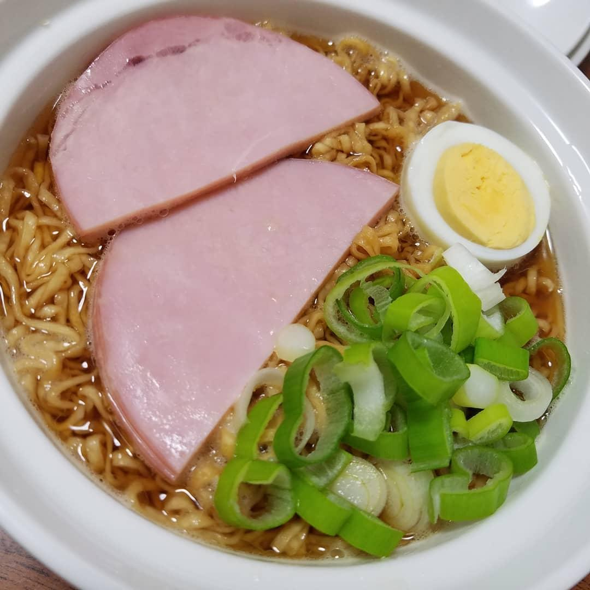

Ham Noodles – Ponyo


Fans of Ponyo will remember Ponyo’s obsession with food,
especially her love for ham. The umami dish doesn’t have an official name,
but it goes by a few monikers – such as ham noodles, Ponyo noodles, and
Ponyo ramen. Here’s how you can level up your instant noodles with just 2
ingredients:

Ingredients:
- 1 packet of instant noodles
- Water
- 1 slice of cooked ham
- 1 egg
- Green onion
Steps:
- Boil water.
-
Transfer the boiling water into a saucepan. Add the egg and add more
boiling water until the egg is fully submerged.
-
Cover the saucepan with a lid and wait for about 8 minutes. Proceed to
Step 5 in the meantime.
-
After 8 minutes, retrieve the hard-boiled egg, cut it into half, and
set aside.
- Chop green onion into bits.
- Slice the ham into halves. Put both ingredients aside.
-
Add instant noodles in a bowl. Pour boiling water over the noodles and
cover with a lid. Set aside for 3 minutes.
-
After the first minute, separate the noodles and add in ham,
hard-boiled egg and green onion. Cover the ramen bowl with a lid
again.
- Wait for 2 more minutes and the dish is ready.